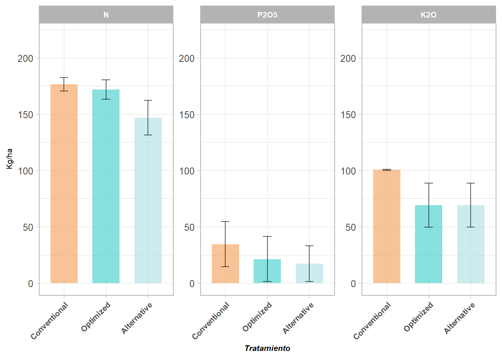
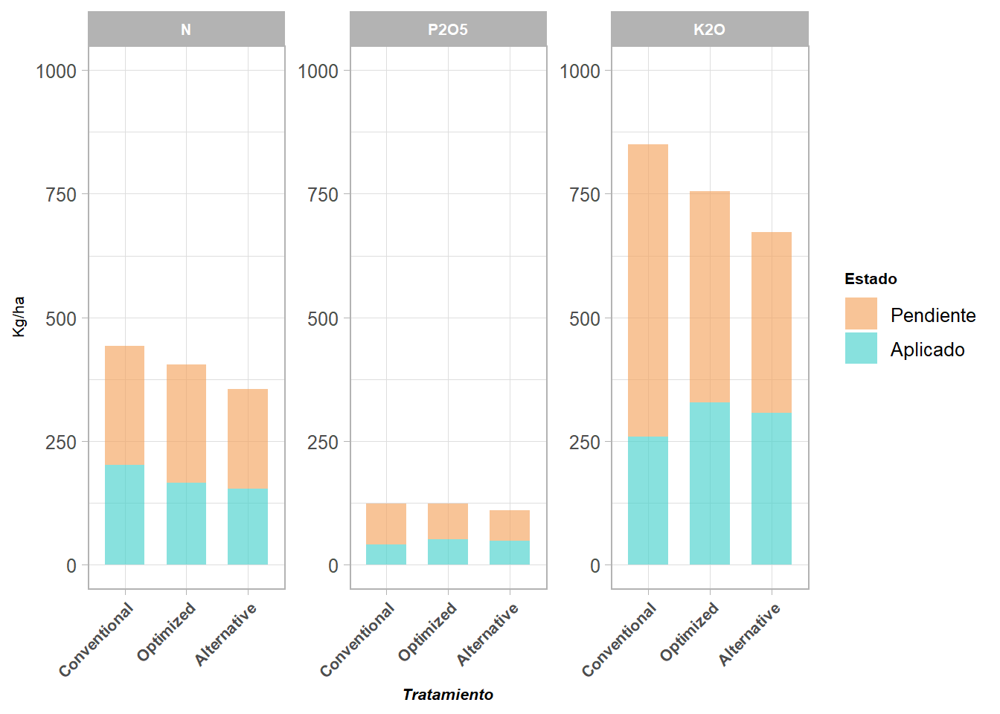

First, we will organize the information in our data frame according to the accumulated recommendations for each treatment to observe differences between them. We will focus on the recommendations for each crop (Rice and Banana).
Organize our dataset according to the following recommendations:
Accumulated recommendations for each treatment.
Different treatments for each crop, focusing on the principal elements (N, P, and K), recommendations along all farms.
Establish differences between the elements applications.
Through this we will be able to answer the followed questions:
How do the different treatments affect the nutrient recommendations for each crop?
What are the differences between the nutrient recommendations for each crop?
Are we reaching the objectives of the fertilization plan?
let’s start by loading the necessary libraries and the data frame.
Code
# Load the necessary librarieslist_p <-c("tidyverse", "readxl", "soiltexture", "readr", "caret", "plotly", "ggsignif", "reactable")sapply(list_p, function(x) {if(!require(x, character.only =TRUE)) {install.packages(x, dependencies =TRUE)library(x, character.only =TRUE) } })FR_Plan <-read_excel("D:\\OneDrive - CGIAR\\Fertilize Right ADMIN\\ACTIVIDADES\\A3. LB Suelos\\Analisis/Fertilizacion.xlsx", na =c("null", NA), sheet ="Fertilizations") ## Fertilization plan for both cropsFR_SL <-read_excel("D:\\OneDrive - CGIAR\\Fertilize Right ADMIN\\ACTIVIDADES\\A3. LB Suelos\\Analisis\\Suelos_LB.xlsx",na =c("null", NA), sheet ="Soil charactheristics") ## Soil data analysis results for both cropsstr(FR_Plan)summary(FR_Plan)
Once we have our data uploaded, we will focus on the followed variables for our analysis: Treatment, Crop, and the Nutrient recommendations (N, P, and K).
# Observe the difference between N, P, and K applications for the rice crop.FR_Plan |>filter(Cultivo =="Arroz") |>group_by(Finca, Tratamiento) |>summarize(N =sum(`Aporte N (Kg/ha)`, na.rm =TRUE),P =sum(`Aporte P (Kg/ha)`, na.rm =TRUE),K =sum(`Aporte K (Kg/ha)`, na.rm =TRUE),.groups ="drop") |>group_by(Tratamiento) |># Calculate the mean and standard deviation for each nutrient according to each treatment and farm applicationsummarize(N_mean =mean(N, na.rm =TRUE),P_mean =mean(P, na.rm =TRUE),K_mean =mean(K, na.rm =TRUE),N_sd =sd(N, na.rm =TRUE),P_sd =sd(P, na.rm =TRUE),K_sd =sd(K, na.rm =TRUE),.groups ="drop") |>mutate(Tratamiento =case_when( Tratamiento =="Convencional"~"Conventional", Tratamiento =="Optimizado"~"Optimized", Tratamiento =="Alternativo"~"Alternative",TRUE~ Tratamiento)) |>pivot_longer(cols =-Tratamiento,names_to =c("Variable", ".value"),names_sep ="_") |>mutate(Tratamiento =factor(Tratamiento, levels =c("Conventional", "Optimized", "Alternative")),Variable =factor(Variable, levels =c("N", "P", "K"))) |>ggplot(aes(x = Tratamiento, y = mean, fill = Tratamiento)) +geom_bar(stat ="identity", position ="dodge", width =0.65, alpha =0.65) +geom_errorbar(aes(x = Tratamiento, ymin = mean - sd, ymax = mean + sd), width =0.2, position =position_dodge(0.5), alpha =0.65) +facet_wrap(~ Variable, labeller =labeller(Variable =c(N ="N",P ="P2O5",K ="K2O")), scales ="free_y") +labs(y =expression("Kg/ha")) +scale_fill_manual(values =c("#F4A460", "#48D1CC", "#B0E0E6")) +guides(color ="none") +theme_light(base_size =12) +coord_cartesian(ylim =c(0, 220)) +theme(legend.position ="none",axis.title.x =element_text(size =8, face ="bold.italic"),axis.title.y =element_text(size =8, face ="bold.italic"),legend.title =element_text(size =8, face ="bold"),axis.text.x =element_text(size =8, face ="bold", angle =45, hjust =1),strip.text =element_text(size =8, face ="bold"))

Warning: package 'fontawesome' was built under R version 4.4.3
Code
FR_Plan |>filter(Cultivo =="Banano") |>group_by(Finca, Tratamiento, Estado) |>summarize(N =sum(`Aporte N (Kg/ha)`, na.rm =TRUE),P =sum(`Aporte P (Kg/ha)`, na.rm =TRUE),K =sum(`Aporte K (Kg/ha)`, na.rm =TRUE),.groups ="drop") |>group_by(Tratamiento, Estado) |># Calculate the mean and standard deviation for each nutrient according to each treatment and farm applicationsummarize(N_mean =mean(N, na.rm =TRUE),P_mean =mean(P, na.rm =TRUE),K_mean =mean(K, na.rm =TRUE),.groups ="drop") |>mutate(Tratamiento =case_when( Tratamiento =="Convencional"~"Conventional", Tratamiento =="Optimizado"~"Optimized", Tratamiento =="Alternativo"~"Alternative",TRUE~ Tratamiento)) |>pivot_longer(cols =-c(Tratamiento, Estado),names_to =c("Variable", ".value"),names_sep ="_") |>mutate(Tratamiento =factor(Tratamiento, levels =c("Conventional", "Optimized", "Alternative")),Variable =factor(Variable, levels =c("N", "P", "K")), Estado =factor(Estado, levels =c("Pendiente", "Aplicado"))) |>na.omit() |>ggplot(aes(x = Tratamiento, y = mean, fill = Estado)) +geom_bar(stat ="identity", width =0.65, alpha =0.65) +facet_wrap(~ Variable, labeller =labeller(Variable =c(N ="N",P ="P2O5",K ="K2O")), scales ="free_y") +labs(y =expression("Kg/ha")) +scale_fill_manual(values =c("#F4A460", "#48D1CC")) +guides(color ="none") +theme_light(base_size =12) +coord_cartesian(ylim =c(0, 1000)) +theme(axis.title.x =element_text(size =8, face ="bold.italic"),axis.title.y =element_text(size =8, face ="bold.italic"),legend.title =element_text(size =8, face ="bold"),axis.text.x =element_text(size =8, face ="bold", angle =45, hjust =1),strip.text =element_text(size =8, face ="bold"))

Once we have this information, let’s calculate the relationship between the applied nitrogen and the available soil. For this process, we will need to organize a table containing the available nitrogen in the soil and the total applied to it to understand the relationship between them and the fulfillment of the requirements of the varieties implemented.
Let’s organize the dataset for each crop according to the requirements of the varieties implemented.